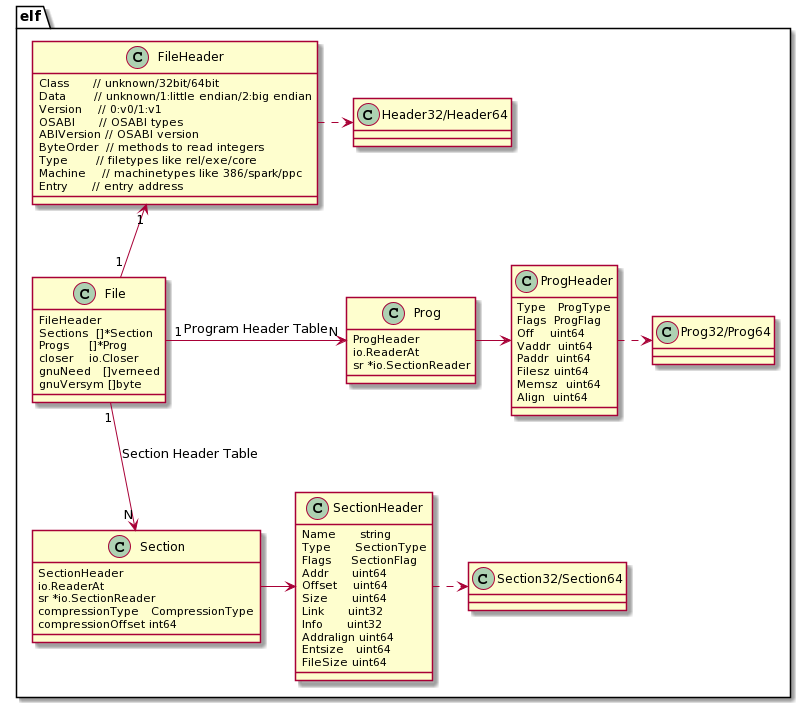

pkg debug/elf Usage
Data Types and Relationships
The standard library provides the package debug/elf to read and parse ELF file data. The related data types and their dependencies are shown in the diagram below:

Simply put, elf.File contains all the information we can obtain from an ELF file. For convenience, the standard library also provides other packages: debug/gosym to parse .gosymtab symbol information, debug/gopclntab for line table information, and debug/dwarf to parse .[z]debug_* debug information.
Common Operations and Examples
Opening an ELF File
Pass the ELF file name to open as a command-line argument, then open the ELF file and print the structure information of elf.File. Here we use a third-party library go-spew/spew, which uses reflection to print all fields in the elf.File structure, recursively expanding composite types as well.
package main
import (
"debug/elf"
"fmt"
"os"
"github.com/davecgh/go-spew/spew"
)
func main() {
if len(os.Args) != 2 {
fmt.Fprintln(os.Stderr, "usage: go run main.go <prog>")
os.Exit(1)
}
prog := os.Args[1]
file, err := elf.Open(prog)
if err != nil {
panic(err)
}
spew.Dump(file)
}
Run the test with go run main.go ../testdata/loop. The structure is very complex, so for readability, some content has been omitted.
It is clear that the ELF file contains the following key information:
- FileHeader, i.e., the ELF Header;
- Sections, where each Section contains an elf.SectionHeader definition, taken from the section header table in the ELF file;
- Progs, where each Prog contains an elf.ProgHeader definition, taken from the program header table in the ELF file;
elf.NewFile() reads the ELF file content and, based on the Class type in the ELF header (unknown/32bit/64bit), selectively uses Header32/64, Prog32/64, Section32/64 types when reading the file. Regardless of 32bit or 64bit, the final values are assigned to the fields in elf.File and returned as elf.File.
From the printed information, careful readers will notice:
- For sections, you can see the specific section names, such as .text, .rodata, .data;
- For segments, you can see the specific segment types, such as note, load, and their virtual addresses;
(*elf.File)(0xc0000ec3c0)({
FileHeader: (elf.FileHeader) {
Class: (elf.Class) ELFCLASS64,
Data: (elf.Data) ELFDATA2LSB,
Version: (elf.Version) EV_CURRENT,
OSABI: (elf.OSABI) ELFOSABI_NONE,
ABIVersion: (uint8) 0,
ByteOrder: (binary.littleEndian) LittleEndian,
Type: (elf.Type) ET_EXEC,
Machine: (elf.Machine) EM_X86_64,
Entry: (uint64) 4605856
},
Sections: ([]*elf.Section) (len=25 cap=25) {
(*elf.Section)(0xc0000fe000)({ SectionHeader: (elf.SectionHeader) { Name: (string) "" ... }}),
(*elf.Section)(0xc0000fe080)({ SectionHeader: (elf.SectionHeader) { Name: (string) (len=5) ".text", ... }}),
(*elf.Section)(0xc0000fe100)({ SectionHeader: (elf.SectionHeader) { Name: (string) (len=7) ".rodata", ... }}),
(*elf.Section)(0xc0000fe180)({ SectionHeader: (elf.SectionHeader) { Name: (string) (len=9) ".typelink", ... }}),
(*elf.Section)(0xc0000fe200)({ SectionHeader: (elf.SectionHeader) { Name: (string) (len=9) ".itablink", ... }}),
(*elf.Section)(0xc0000fe280)({ SectionHeader: (elf.SectionHeader) { Name: (string) (len=9) ".gosymtab", ... }}),
(*elf.Section)(0xc0000fe300)({ SectionHeader: (elf.SectionHeader) { Name: (string) (len=10) ".gopclntab", ... }}),
(*elf.Section)(0xc0000fe380)({ SectionHeader: (elf.SectionHeader) { Name: (string) (len=13) ".go.buildinfo", }}),
(*elf.Section)(0xc0000fe400)({ SectionHeader: (elf.SectionHeader) { Name: (string) (len=10) ".noptrdata", ... }}),
(*elf.Section)(0xc0000fe480)({ SectionHeader: (elf.SectionHeader) { Name: (string) (len=5) ".data", ... }}),
(*elf.Section)(0xc0000fe500)({ SectionHeader: (elf.SectionHeader) { Name: (string) (len=4) ".bss", ... }}),
(*elf.Section)(0xc0000fe580)({ SectionHeader: (elf.SectionHeader) { Name: (string) (len=9) ".noptrbss", ... }}),
(*elf.Section)(0xc0000fe600)({ SectionHeader: (elf.SectionHeader) { Name: (string) (len=14) ".zdebug_abbrev", ... }}),
(*elf.Section)(0xc0000fe680)({ SectionHeader: (elf.SectionHeader) { Name: (string) (len=12) ".zdebug_line", ... }}),
(*elf.Section)(0xc0000fe700)({ SectionHeader: (elf.SectionHeader) { Name: (string) (len=13) ".zdebug_frame", ... }}),
(*elf.Section)(0xc0000fe780)({ SectionHeader: (elf.SectionHeader) { Name: (string) (len=16) ".zdebug_pubnames", ... }}),
(*elf.Section)(0xc0000fe800)({ SectionHeader: (elf.SectionHeader) { Name: (string) (len=16) ".zdebug_pubtypes", ... }}),
(*elf.Section)(0xc0000fe880)({ SectionHeader: (elf.SectionHeader) { Name: (string) (len=18) ".debug_gdb_scripts", ... }}),
(*elf.Section)(0xc0000fe900)({ SectionHeader: (elf.SectionHeader) { Name: (string) (len=12) ".zdebug_info", ... }}),
(*elf.Section)(0xc0000fe980)({ SectionHeader: (elf.SectionHeader) { Name: (string) (len=11) ".zdebug_loc", ... }}),
(*elf.Section)(0xc0000fea00)({ SectionHeader: (elf.SectionHeader) { Name: (string) (len=14) ".zdebug_ranges", ... }}),
(*elf.Section)(0xc0000fea80)({ SectionHeader: (elf.SectionHeader) { Name: (string) (len=16) ".note.go.buildid", ... }}),
(*elf.Section)(0xc0000feb00)({ SectionHeader: (elf.SectionHeader) { Name: (string) (len=7) ".symtab", ... }}),
(*elf.Section)(0xc0000feb80)({ SectionHeader: (elf.SectionHeader) { Name: (string) (len=7) ".strtab", ... }}),
(*elf.Section)(0xc0000fec00)({ SectionHeader: (elf.SectionHeader) { Name: (string) (len=9) ".shstrtab", ... }})
},
Progs: ([]*elf.Prog) (len=7 cap=7) {
(*elf.Prog)(0xc0000ba2a0)({ ProgHeader: (elf.ProgHeader) { Type: (elf.ProgType) PT_PHDR, Flags: (elf.ProgFlag) PF_R, Vaddr: (uint64) 4194368 }}),
(*elf.Prog)(0xc0000ba300)({ ProgHeader: (elf.ProgHeader) { Type: (elf.ProgType) PT_NOTE, Flags: (elf.ProgFlag) PF_R, Vaddr: (uint64) 4198300 }}),
(*elf.Prog)(0xc0000ba360)({ ProgHeader: (elf.ProgHeader) { Type: (elf.ProgType) PT_LOAD, Flags: (elf.ProgFlag) PF_X+PF_R, Vaddr: (uint64) 4194304 }}),
(*elf.Prog)(0xc0000ba3c0)({ ProgHeader: (elf.ProgHeader) { Type: (elf.ProgType) PT_LOAD, Flags: (elf.ProgFlag) PF_R, Vaddr: (uint64) 4825088 }}),
(*elf.Prog)(0xc0000ba420)({ ProgHeader: (elf.ProgHeader) { Type: (elf.ProgType) PT_LOAD, Flags: (elf.ProgFlag) PF_W+PF_R, Vaddr: (uint64) 5500928 }}),
(*elf.Prog)(0xc0000ba480)({ ProgHeader: (elf.ProgHeader) { Type: (elf.ProgType) PT_LOOS+74769745, Flags: (elf.ProgFlag) PF_W+PF_R, Vaddr: (uint64) 0 }}),
(*elf.Prog)(0xc0000ba4e0)({ ProgHeader: (elf.ProgHeader) { Type: (elf.ProgType) PT_LOOS+84153728, Flags: (elf.ProgFlag) 0x2a00, Vaddr: (uint64) 0 }})
},
...
})
Reading the Program Header Table
The Progs field in elf.File is the Program Header Table. The previous example showed how to read and print the structure of an ELF file. Building on that, let's further explore the program header table data.
Now, iterate over the program header table data in the ELF file to view each segment's type, permission bits, virtual memory address, and segment size. Other data in the segment is not of concern here.
package main
import (
"text/tabwriter"
...
)
func main() {
...
file, err := elf.Open(prog)
...
tw := tabwriter.NewWriter(os.Stdout, 0, 4, 3, ' ', 0)
defer tw.Flush()
fmt.Fprintf(tw, "No.\tType\tFlags\tVAddr\tMemSize\n")
for idx, p := range file.Progs {
fmt.Fprintf(tw, "%d\t%v\t%v\t%#x\t%d\n", idx, p.Type, p.Flags, p.Vaddr, p.Memsz)
}
}
Run the test with go run main.go ../testdata/loop. The output is as follows.
You can see the index number, segment type, permission bits, virtual memory address, and memory size of each segment (some segments may be larger than the data to be loaded, e.g., segments containing .data and .bss may have extra space for the heap).
No. Type Flags VAddr MemSize
0 PT_PHDR PF_R 0x400040 392
1 PT_NOTE PF_R 0x400f9c 100
2 PT_LOAD PF_X+PF_R 0x400000 626964
3 PT_LOAD PF_R 0x49a000 673559
4 PT_LOAD PF_W+PF_R 0x53f000 295048
5 PT_LOOS+74769745 PF_W+PF_R 0x0 0
6 PT_LOOS+84153728 0x2a00 0x0 0
Reading the Section Header Table
Just iterate over file.Sections to read the section header table information. Note that the SectionHeader entry is organized into each elf.Section in the current package implementation.
package main
import (
"text/tabwriter"
...
)
func main() {
...
file, err := elf.Open(prog)
...
tw = tabwriter.NewWriter(os.Stdout, 0, 4, 3, ' ', 0)
heading := "No.\tName\tType\tFlags\tAddr\tOffset\tSize\tLink\tInfo\tAddrAlign\tEntSize\tFileSize\n"
fmt.Fprintf(tw, heading)
for idx, s := range file.Sections {
fmt.Fprintf(tw, "%d\t%s\t%s\t%s\t%#x\t%d\t%d\t%d\t%d\t%d\t%d\t%d\n",
idx, s.Name, s.Type.String(), s.Flags.String(), s.Addr, s.Offset,
s.Size, s.Link, s.Info, s.Addralign, s.Entsize, s.FileSize)
}
tw.Flush()
}
Run the test with go run main.go ../testdata/loop. The program will output the section header table information, showing the index, name, type, flags, virtual address, offset, size, link info, etc., for each section.
No. Name Type Flags Addr Offset Size Link Info AddrAlign EntSize FileSize
0 SHT_NULL 0x0 0x0 0 0 0 0 0 0 0
1 .text SHT_PROGBITS SHF_ALLOC+SHF_EXECINSTR 0x401000 4096 622868 0 0 32 0 622868
2 .rodata SHT_PROGBITS SHF_ALLOC 0x49a000 630784 278566 0 0 32 0 278566
3 .typelink SHT_PROGBITS SHF_ALLOC 0x4de200 909824 1844 0 0 32 0 1844
4 .itablink SHT_PROGBITS SHF_ALLOC 0x4de938 911672 80 0 0 8 0 80
5 .gosymtab SHT_PROGBITS SHF_ALLOC 0x4de988 911752 0 0 0 1 0 0
6 .gopclntab SHT_PROGBITS SHF_ALLOC 0x4de9a0 911776 392567 0 0 32 0 392567
7 .go.buildinfo SHT_PROGBITS SHF_WRITE+SHF_ALLOC 0x53f000 1306624 32 0 0 16 0 32
8 .noptrdata SHT_PROGBITS SHF_WRITE+SHF_ALLOC 0x53f020 1306656 58560 0 0 32 0 58560
9 .data SHT_PROGBITS SHF_WRITE+SHF_ALLOC 0x54d4e0 1365216 29712 0 0 32 0 29712
10 .bss SHT_NOBITS SHF_WRITE+SHF_ALLOC 0x554900 1394928 196400 0 0 32 0 196400
11 .noptrbss SHT_NOBITS SHF_WRITE+SHF_ALLOC 0x584840 1394928 10312 0 0 32 0 10312
12 .zdebug_abbrev SHT_PROGBITS 0x0 0x588000 1394928 281 0 0 1 0 281
13 .zdebug_line SHT_PROGBITS 0x0 0x588119 1395209 117701 0 0 1 0 117701
14 .zdebug_frame SHT_PROGBITS 0x0 0x5a4cde 1512910 25178 0 0 1 0 25178
15 .zdebug_pubnames SHT_PROGBITS 0x0 0x5aaf38 1538088 5283 0 0 1 0 5283
16 .zdebug_pubtypes SHT_PROGBITS 0x0 0x5ac3db 1543371 13539 0 0 1 0 13539
17 .debug_gdb_scripts SHT_PROGBITS 0x0 0x5af8be 1556910 44 0 0 1 0 44
18 .zdebug_info SHT_PROGBITS 0x0 0x5af8ea 1556954 211236 0 0 1 0 211236
19 .zdebug_loc SHT_PROGBITS 0x0 0x5e320e 1768190 92521 0 0 1 0 92521
20 .zdebug_ranges SHT_PROGBITS 0x0 0x5f9b77 1860711 35995 0 0 1 0 35995
21 .note.go.buildid SHT_NOTE SHF_ALLOC 0x400f9c 3996 100 0 0 4 0 100
22 .symtab SHT_SYMTAB 0x0 0x0 1896712 70944 23 443 8 24 70944
23 .strtab SHT_STRTAB 0x0 0x0 1967656 67996 0 0 1 0 67996
24 .shstrtab SHT_STRTAB 0x0 0x0 2035652 280 0 0 1 0 280
Reading a Specific Section
Now let's see how to read the data of a specific section. Using sections that will be used in the debugger process as examples is a good idea. Reading prog data is no different; essentially, it's also calling the section reader.
Example 1: .text section:
package main
import (
"text/tabwriter"
...
)
func main() {
...
file, err := elf.Open(prog)
...
// .text section
dat, err := file.Section(".text").Data()
if err != nil {
panic(err)
}
fmt.Printf("% x\n", dat[:32])
}
Run the test with go run main.go ../testdata/loop. The program will output the first 32 bytes of the .text section in hexadecimal.
64 48 8b 0c 25 f8 ff ff ff 48 3b 61 10 76 38 48 83 ec 18 48 89 6c 24 10 48 8d 6c 24 10 0f 1f 00
Just looking at a bunch of hex numbers isn't particularly helpful. For the .text section, we can also use a disassembly framework to convert these instructions into assembly language. The following program disassembles and outputs the first 10 instructions.
import (
"golang.org/x/arch/x86/x86asm"
)
func main() {
...
// .text section
dat, err := file.Section(".text").Data()
...
offset := 0
for i := 0; i < 10; i++ {
inst, err := x86asm.Decode(dat[offset:], 64)
if err != nil {
break
}
fmt.Println(x86asm.GNUSyntax(inst, 0, nil))
offset += inst.Len
}
}
Example 2: .data section:
Similarly, we can read the .data section data, but the following program also only prints hex numbers, which isn't very helpful. Recall that the .text section can be disassembled using a disassembly framework (since instruction encoding/decoding is regular), but how do we parse the data here?
This requires an understanding of Go's type system. For example, if .data stores a string, a struct, or an interface{}, only with a deep understanding of the type system can we correctly interpret the data here and provide help for our debugging process.
func main() {
...
dat, err := file.Section(".data").Data()
if err != nil {
panic(err)
}
fmt.Printf("% x\n", dat[:32])
}
Directly reading and writing memory data is often done when we know the memory address of a variable. Since it's a variable, we also know its type, and then we can view and parse the data at that memory address, such as with the pmem command. pmem requires us to manually specify the byte size of each element to parse correctly.
A more convenient approach is to use debug symbol information, analyze the type information corresponding to the symbol, as well as its location in memory, and then read the memory data and parse it according to the type. We will introduce this in the debug/dwarf section.
In this section, we introduced the design of the standard library debug/elf and demonstrated common operations. Next, we'll introduce the use of the debug/gosym package to understand how to utilize the symbol and line number information generated by the Go toolchain.
References
- How to Fool Analysis Tools, https://tuanlinh.gitbook.io/ctf/golang-function-name-obfuscation-how-to-fool-analysis-tools
- Go 1.2 Runtime Symbol Information, Russ Cox, https://docs.google.com/document/d/1lyPIbmsYbXnpNj57a261hgOYVpNRcgydurVQIyZOz_o/pub
- Some notes on the structure of Go Binaries, https://utcc.utoronto.ca/~cks/space/blog/programming/GoBinaryStructureNotes
- Buiding a better Go Linker, Austin Clements, https://docs.google.com/document/d/1D13QhciikbdLtaI67U6Ble5d_1nsI4befEd6_k1z91U/view
- Time for Some Function Recovery, https://www.mdeditor.tw/pl/2DRS/zh-hk